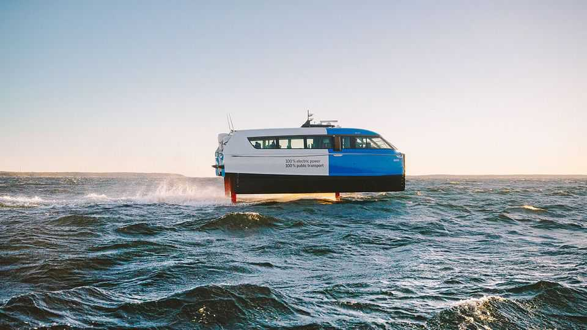

Science & technology | Anchors aweigh
“Flying” electric boats could remake urban transport
The convergence of three technologies has made possible the reinvention of the hydrofoil
February 12th 2026

THE CANDELA C-8 looks like a minimalist speedboat as it bobs in the water on a snowy morning in Stockholm. Powered by electricity, rather than a noisy outboard motor, it is eerily quiet as it pulls away from the dock. But once the boat reaches open water and starts to pick up speed, something extraordinary happens: it takes off. The hull lifts entirely out of the water, until it is flying, half a metre above the surface, supported by three thin, red struts.
These struts are in turn supported by two retractable hydrofoils, or underwater wings—one between the two front struts and one under the rear strut—which turn forward motion into lift. Propulsion is provided by a torpedo-shaped motor assembly, with two coaxial propellers, in the centre of the rear wing. Lifting the hull out of the water reduces drag, and thus the energy required for propulsion, by as much as 80%. Sensors around the boat measure the waves and adjust the tilt of the wings 100 times a second, providing such a solid, smooth ride that the boat feels as though it is on rails. “OK, we’re landing now,” says the pilot after a few minutes, and the hull sinks back into the water.
Electric hydrofoils are ideal for urban transport, says Gustav Hasselskog, the founder of Candela, which makes a 30-passenger hydrofoiling ferry, the P-12 (pictured), as well as the C-8, a leisure boat. They are quiet, emission-free and cheap to run (the C-8’s cost per nautical mile is about 5% of that of a conventional speedboat). In many cities, boats are speed-limited, to minimise the disturbance caused by their wake. Hydrofoils cause much less disruption and could be permitted to travel faster. Their proponents believe they could reshape urban transport by shifting traffic from clogged roads to underused waterways. Cities around the world are starting to put these claims to the test.
Candela, based in Sweden, is at the forefront of an international array of startups making electric hydrofoiling boats (it has delivered around 100 leisure boats, and has orders for 83 ferries). Its rivals include Artemis Technologies in Northern Ireland, MobyFly in Switzerland, Navier in America, SeaBubbles in France and Vessev in New Zealand. Like Candela, many of these firms offer smaller leisure boats and larger passenger vehicles. Electric hydrofoils also have military uses, says Sampriti Bhattacharyya, founder of Navier, because they are quiet and, with no combustion engine, have a small heat signature.
The hydrofoil is not a new idea. It dates back to at least 1869, and the first successful example was built in 1904. Hydrofoil ferries have long been used in many parts of the world. But modern hydrofoils, such as the superyachts seen in America’s Cup races, are different. Rather than the “surface piercing” approach of earlier hydrofoils, the instability of which can cause a bumpy ride, modern vessels have completely submerged wings. This reduces drag and improves stability. But it requires constant, tiny adjustments to keep the boat stable and level, which is only possible using the kinds of sensors and control systems nowadays found in smartphones, drones and autonomous cars.
The new electric hydrofoils are dependent on digital technology, then. They also take advantage of advanced materials and modern electric drivetrains. It is the convergence of these three technologies, borrowed from other fields, that has finally made hydrofoiling practical and scalable, observes Ms Bhattacharyya. “Land and air are going electric—maritime is the obvious next step,” she says.
The power needed to propel a hydrofoil is directly proportional to its mass, so minimising a vessel’s overall weight is vital. The wings themselves also need to be simultaneously small enough to reduce drag and strong enough to bear the weight of the boat. The solution is to borrow from aerospace and motor racing, and use carbon fibre. It has a reputation for being expensive, but that is changing. The wider availability of carbon fibre at lower cost has been “crucial” to enable hydrofoiling, says Mika Takahashi of IDTechEx, a market-intelligence firm.

Indeed, building the precise shape of a hydrofoil wing out of carbon fibre is cheaper than milling it from steel, says Mr Hasselskog. At his factory in Stockholm, the carbon-fibre hulls of a dozen P-12 ferries are lined up as their control systems are installed. Candela says it is the only company in the world in serial production of electric hydrofoils.
When it comes to electric drivetrains, makers of electric hydrofoils have been able to piggyback on the electrification of other forms of transport. In a prototype vessel, Candela used a lithium battery from a BMW i3 electric vehicle (EV), before moving on to batteries from BYD, a Chinese carmaker. It now has a partnership with Polestar, a Swedish-Chinese maker of EVs. Using batteries and power systems from EVs also allows electric boats to use standard fast-chargers designed for cars.
As for motors, Candela initially used one designed for electric planes, but ended up designing its own, submersible motor. Putting it underwater, mounted on the rear wing, provides cooling and improves efficiency. With two coaxial propellers, rotating in opposite directions, the spin induced in the wake by one is mostly cancelled out by the other, reducing energy losses. (One propeller is 70% efficient, says Mr Hasselskog, but two are 80% efficient.)
In short, new ideas are revolutionising “an industry that had long been technologically stagnant”, says Ms Bhattacharyya. “In ten years, hydrofoiling will be the universal standard for high-speed maritime transit,” she predicts. Nearly half of the world’s population lives in coastal regions, where cities are often gridlocked. Waterborne transit on what she terms “blue highways” is an obvious solution, initially for passengers, but also for goods, in such cities as well as island and archipelago regions. Mr Hasselskog makes a similar point, though his preferred term is “forgotten highways” because many cities made greater use of waterborne transport in the past, before the introduction of cars.
In cities, existing ferries are hugely inefficient, using 15-30 times more fuel per passenger mile than buses. They have to be large vessels to cope with demand during peak hours, but then have low occupancy for the rest of the day. Using a larger number of smaller, more efficient electric boats makes more sense and can provide a more frequent service, says Mr Hasselskog.
Several cities in Sweden and Norway have carried out passenger trials with Candela’s P-12 ferry. The firm will soon deliver eight vessels to Saudi Arabia and has orders from customers in India, Thailand and elsewhere. Candela reckons that the market for electric ferries could be worth $22bn globally. Its existing factory can produce 40 vessels a year, but it plans to open a larger facility in Poland in late 2026.
The maximum size of hydrofoiling vessels is limited by the laws of physics. The mass of the boat (and thus the power required) increases with the cube of its length, but its passenger capacity increases only with the square. Artemis has developed a 150-person electric hydrofoil ferry, the EF-24. But a large conventional ferry running between Dover and Calais can carry 1,750 passengers, and their cars, notes Mr Takahashi. Such ferries, which can be modified to run under electrical power, will continue to dominate high-traffic routes, he predicts. But on short, passenger-only routes in cities, electric hydrofoils may be about to take off. ■
Curious about the world? To enjoy our mind-expanding science coverage, sign up to Simply Science, our weekly subscriber-only newsletter.